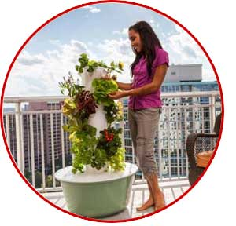
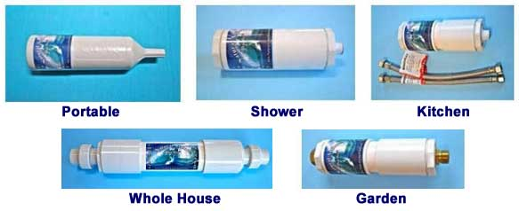

All natural, whole food product made from 17 different fruits, vegetables
and grains that bridge the gap between what you should eat and what you actually
eat. The fact is that most of the food that is available to us is void or
severely depleted of their natural nutrients and cooking can further deplete
the nutritional value therefore it is beneficial to supplement. With these
products you are able to provide your body with with the basic nutritional
foundation in convenient, inexpensive capsule form.
Juice+ Tower Garden

Tower Garden, a vertical, aeroponic growing system, allows you to grow
up to 20 vegetables, herbs, fruits and flowers in less than three square
feet—indoors or out. So it’s the perfect companion in your journey
toward healthy living.
Click here for more information
Young Living Essential Oils
The world leader in essential oils
Young Living is the world leader in providing therapeutic medicinal grade
essential oils. Essential Oils, known as nature’s living energy, are
highly concentrated and far more potent than dry herbs. They provide a
natural alternative to the synthetic products and chemicals you may be
using. You may use them for all types of cleaning, disinfecting, cooking,
skin care, gardening, personal hygiene, strengthening your immune system,
maintaining and promoting mental and emotional equilibrium and clarity, as
well as, promoting comfort and wellness. They can be safely worn, ingested
and/or diffused. Insects even avoid them and certain oils can be used
safely with animals also. For full listing of products to order and/or
more information, click on the link.
Fun, effortless products for you that are Excellent helpers for clearing
non-beneficial energy, neutralizing unnatural substances, toxins and
recharging them with healthy nature balanced nurturing vibes! Neutralize
EMF (electromagnetic frequencies) from electronics, cell phones etc. Items
to place under your plates and cups to charge food and drinks, they are
infrared so the energy can pass through the dishes! They re-charge
themselves and never need to be cleared. Use them to sooth discomfort on
your body. Items to place in your bra for a clearing of toxic vibes from
under wires or near your heart for comfort. These are important little
helpers under your pet’s food and water dishes. Pet food is pretty toxic
now a days and water is full of contaminates. Pets are even more
vulnerable to toxins than we are. These products can upgrade the quality
of your cosmetics and lotions. Use under the legs of your metal bed frame
to help ground your bed. Use them in your clothing drawers to help raise
the vibe of synthetic clothing. They can provide emotional upliftment,
help you to maintain balance during high stress times. Helps you stay
grounded and focused. Lots and lots of healthy uplifting products;
clothing, jewelry, items for plants, cream & products for rejuvenation,
products that extend the shelf life of food in your refrigerator the list
goes on and on. You really have to check these out! Click on the link for
products and more information.
Click here for more information
Structured Water Units

The Ultimate in Water Technology - No filters or cartridges to replace.
Various units available for various uses (shower, sink, garden, whole
house etc.) that structure your water. The units raise the pH to 7.0-7.5,
the balanced hydrogen potential for a long healthy life. To make sure you
always have balanced water when you travel, there is also a portable
Structured Water Unit that can be carried with you so you always have
balanced water. Despite what you may have heard — much of the tap water,
de-ionized water and even bottled water has a pH of around 5.5-6.5. The
long term effect of this acidic water is that it causes the buildup of
free radicals in the body, which are the source of aging, cancer and the
destruction of healthy cells. Not only can most filter systems remove
almost everything from water, they also remove water's aliveness, leaving
one with essentially 'dead' water. But that's just the tip of the iceberg.
The Natural Action Structured Water Unit softens water while leaving in
all the healthful minerals standard water softeners and reverse osmosis
systems remove. Click link for products, product information and
testimonials.